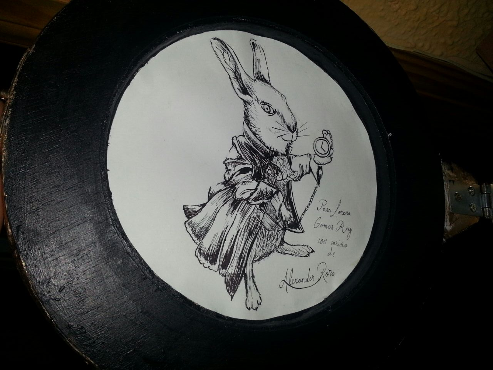
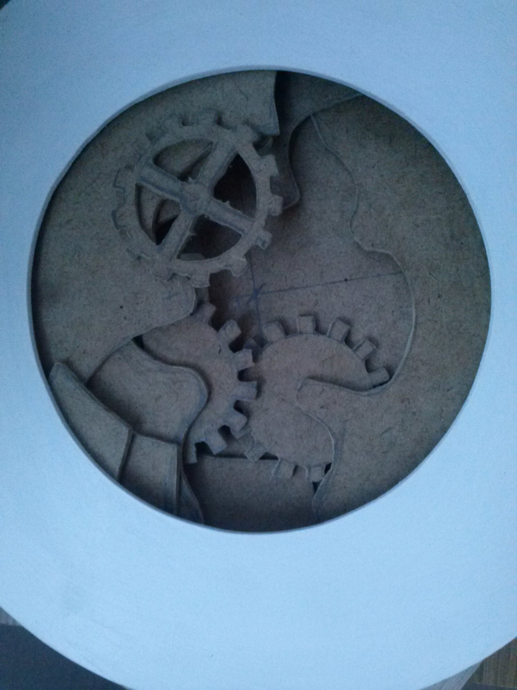
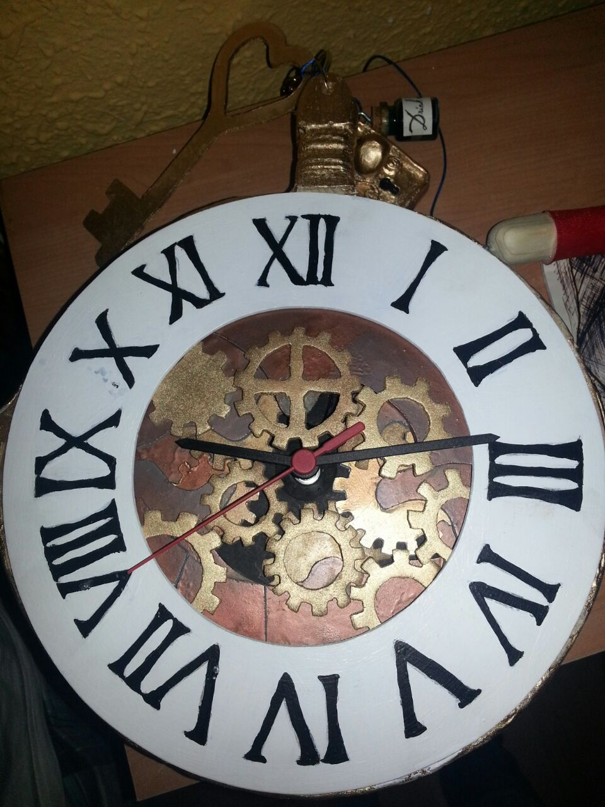
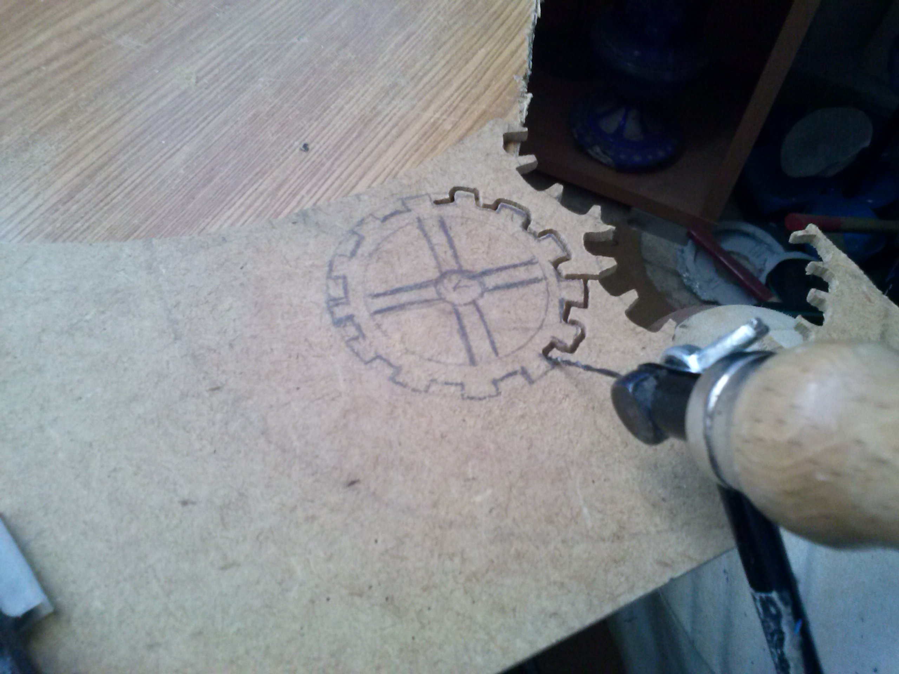

Este proyecto fue una obra de ebanistería en la cual el reto consistía en hacer una pieza de arte funcional, inspirada en el reloj del conejo blanco de Alicia en el país de las maravillas. Todo el reloj fue construido en madera, pintado con pinturas acrílicas brillantes y coronado por varias ilustraciones y detalles.
El proyecto está hecho de varios “anillos” de madera recortados y pegados para hacer uno solo, al cual se le añadió una maquinaria de reloj real, y varios engranajes falsos recortados en madera uno a uno.
Este proyectó formó parte del atrezzo de una obra teatral inspirada en la misma novela
   